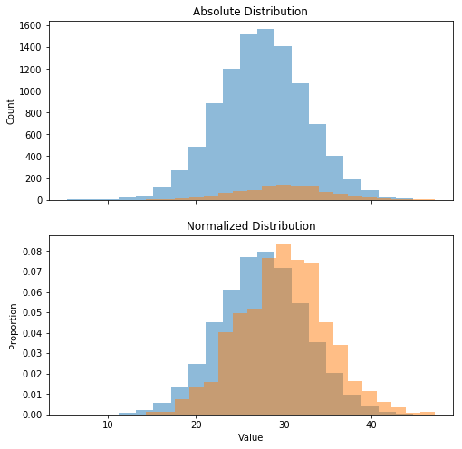

import numpy as np
import pandas as pd
import matplotlib.pyplot as plt
dist1 = np.random.normal(27.5, 5, 10000)
dist2 = np.random.normal(30, 5, 1000)
fig, (ax1, ax2) = plt.subplots(2, 1, sharex=True, figsize=(8, 8))
ax1.hist(dist1, bins=20, alpha=0.5, label='Distribution 1')
ax1.hist(dist2, bins=20, alpha=0.5, label='Distribution 2')
ax1.set_title('Absolute Distribution')
ax1.set_ylabel('Count')
ax2.hist(dist1, bins=20, alpha=0.5, normed=True, label='Distribution 1')
ax2.hist(dist2, bins=20, alpha=0.5, normed=True, label='Distribution 2')
ax2.set_title('Normalized Distribution')
ax2.set_ylabel('Proportion')
plt.xlabel('Value')
plt.show()
